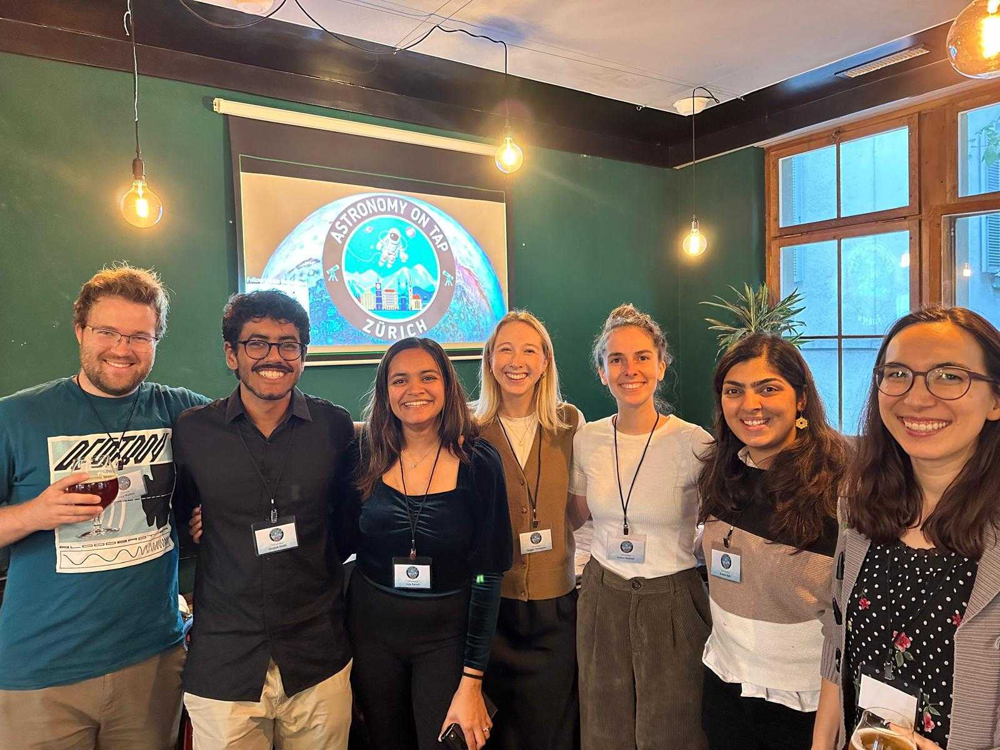

Outreach
Science is for
everyone.
Actively engaged in science communication, making planetary science accessible, curious, and fun for non-specialist audiences. I enjoy engaging with topics in gemmology, environmental science, and broader scientific themes too.

Astronomy on Tap Zürich, co-founded by Urja

Invited talk at the Dept. of Geology, St. Xavier's College, Mumbai
🌟 Selected Activities
Co-founder, Astronomy on Tap Zürich
A public science event series bringing researchers and the public together in informal settings. Good talks, good company, good beer.
Invited Talk at St. Xavier's College, Mumbai
Exoplanet science for undergraduate geology students at my alma mater in Mumbai.
Fantasy Basel (Swiss Comic Con)
Public outreach at Fantasy Basel, supporting the Space Pavilion at the NCCR PlanetS stand.